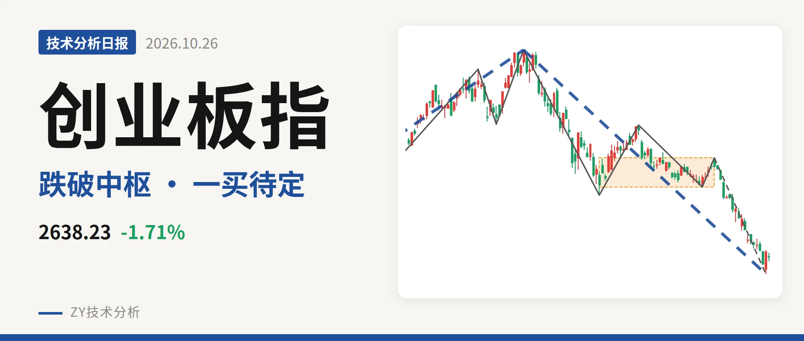
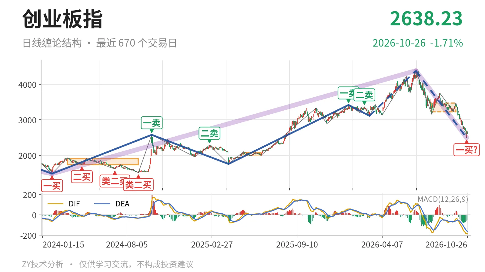
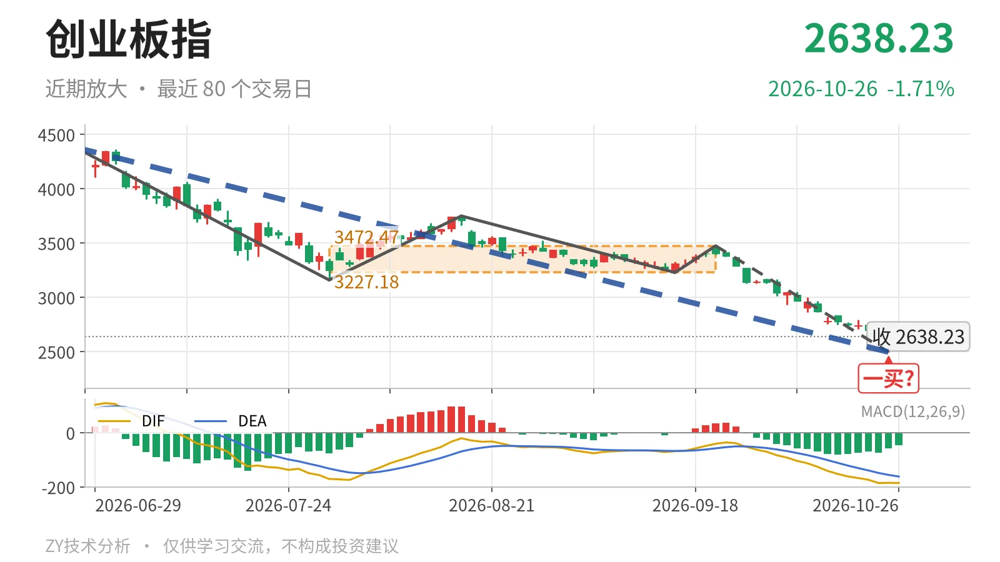

创业板指｜跌破3227点中枢下沿，2494点一买待定

最近日线中枢 3227.18—3472.47点，收盘位于中枢之下
一句话：新低后现暂定一买，反抽不回3227点仍属弱势
📉 走势结构：日线下跌段还在延续，大级别上涨未被破坏
日线级别上，6月25日至10月23日的下跌线段还没有结束，从4380.41点一路下探到2494.22点，跌幅约43.1%，内含5笔。其中9月22日至10月23日的最后一笔仍在延伸，10月26日虽有反抽，最高2671.81点、最低2601.09点，但仅1根K线，未能扭转笔的方向。日线线段角度，3月9日至6月25日的上涨线段仍处于未完成状态，6月25日以来的下跌线段也未见结束信号，说明当前处在上涨后的反向段内部。更大级别看，2024年2月5日至2026年6月25日的上涨走势也未结束，6月25日以来的下跌段先按该上涨段内的反向段处理；反向段未完成前，调整结构不会终结。

📍 中枢位置：跌破最近中枢下沿，中枢高位回落
最新收盘2638.23点已经明显脱离最近日线笔中枢 3227.18—3472.47点，低于下沿约18.2%。该中枢由7月30日至9月22日的反弹构成，尚未完成；与2025年5月14日至2025年6月23日的1996.96—2076.91点相比，中枢位置上移到了高位，但当前价格跌破下沿，中枢有向下摆动的风险，下方暂时没有同级中枢承接。
🧭 买卖点：10月23日一买属于暂定
日线笔级别上，10月23日的 2494.22点 是暂定的一买。它所在的9月22日至10月23日下跌笔还在延续，10月26日反抽最高2671.81点，但未形成反向笔，所以这个一买会随这一笔的延续而变化。线段级别最近的结构点是3月9日三买3111.88点，6月25日以来的下跌段还未出现新的线段级别卖点。再看左侧，1月13日一卖3416.84点和2月25日二卖3363.18点一个比一个低，且6月25日又创出4380.41点新高，因此这两个卖点只能对应日线笔或更小级别，不能当作更大级别转折点。

⚖️ 背驰：绿柱面积缩小，DIF低点小创新低
背驰比较落在6月25日至7月30日与9月22日至10月23日两段同向下跌笔。前一段绿柱面积1837，DIF低点-171.1；后一段绿柱面积842，DIF低点-186.3。价格从3158.14点继续跌破到2494.22点创了新低，但绿柱面积没有同步放大，DIF低点却小幅刷新，属于弱背驰，不是标准的新低不新弱。这对应10月23日暂定一买的结构，但力度比较并不完整；当前DIF仍在零轴下方，反抽只能先按次级别处理。
🔎 关键位置观察：反抽回不到3227点，结构仍是三卖
结构上最关键的是最近中枢下沿 3227.18点 和上沿 3472.47点。当前价距3227点约589点，若反抽回不到3227点上方，结构上构成三卖，6月25日以来的下跌段还会延续；重新站上3227点，才有回到中枢震荡的条件，并可能转向中枢扩展。3472点上沿若不能收复，反抽只能视为下跌段内部的反向动作。结构上，中枢下沿未收复前，反弹都按次级别处理，仍属弱势。
⚠️ 本文为基于公开行情数据的缠论技术结构记录，由程序自动计算并生成，仅供学习交流，不构成任何投资建议。市场有风险，投资需谨慎。